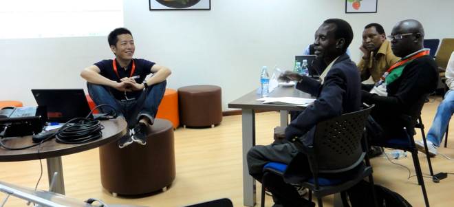

KOMIYAMA, Koichiro (小宮山功一朗)

Affiliation
所属
Ph.D Candidate, Keio University Graduate School of Media and Governance (慶應義塾大学大学院政策・メディア研究科 後期博士課程 博士候補)
GR Program, Supervised by Professor
Motohiro Tsuchiya.
- Deputy Director of Global Coordination Division/Manager of Enterprise Support Group,
JPCERT/CC
- Research Advisory Group Deputy Chair,
Global Commission on the Stability of Cyberspace (2017/4 - present)
Research Subject
研究課題
Confidence Building Measures in Cyberspace, Cyber Conflict, Confidence Building Measures, ICT4D
(サイバー空間における信頼醸成措置,サイバー紛争、信頼醸成措置、ICT分野の能力開発)
Works
研究業績
Papers
論文
- 小宮山功一朗. 2019. “サイバーセキュリティにおけるインシデント対応コミュニティの発展 - 目的、機能、文化から見るCSIRT -.” 情報通信学会誌 37 (1): 13–23.
- Komiyama, Koichiro. 2019. “The Information Technology Iundustry in North Korea.” Keio University Global Research Institute (4). Retrieved September 16, 2019 (http://www.kgri.keio.ac.jp/en/docs/S180620190226.pdf).
- 小宮山功一朗. 2019. “北朝鮮の情報通信技術産業 -金正日がもたらしたいびつな成功と労働力余剰-.” InfoCom REVIEW 72: 17–29.
- 小宮山功一朗 and 土屋大洋. 2018. “サイバーセキュリティ戦略の国際比較 ー 目的と対象範囲に基づく四類型ー.” グローバル・ガバナンス 3 (4): 94–109.(研究ノートとして採録。)
- 山口健太郎, 小宮山功一朗, and 内田勝也. 2009. “63-4 ユーザへの接種というアプローチに標的型攻撃対策-2.” Pp. 349–50 in 情報処理学会第71会全国大会.
- Komiyama, Koichiro, Toshinori Seko, Yusuke Ichinose, Kei. Kato, Kohei. Kawano, and Hiroshi. Yoshiura. 2010. “In-Depth Evaluation of Content-Based Phishing Detection to Clarify Its Strengths and Limitations.” Communications in Computer and Information Science CCIS 124: 95–106.
- 加藤慧, 小宮山功一朗, 瀬古敏智, 一瀬友祐, 河野耕平, and 吉浦裕. 2010. “コンテンツベースフィッシング検知手法の大規模実例評価と改良.” 情報処理学会研究報告 44: 1–7.
Books 書籍
- 土屋大洋監修『角川インターネット講座（13）仮想戦争の終わり―サイバー戦争とセキュリティ―』KADOKAWA、2014 (「第9章サイバーセキュリティの国際連携と信頼醸成措置」を早貸淳子と担当)。
- 佐々木良一監修、日本ネットワークセキュリティ協会教育部会著『情報セキュリティプロフェッショナル教科書』アスキー・メディアワークス、2009 (「第2章攻撃の対象と攻撃の手法」3節及び「第8章PCの防御」を担当。
Presentations
口頭発表
- "Offensive Cyber Operations", The University of Tokyo Graduate school of Public Policy, as a guest lecturer of Transformation of Warfare and Technology, December 17, 2019.
- Security of Electronic Parts、慶應義塾大学大学院院講義、地域戦略研究(東アジア) ゲストスピーカー、2019年10月29日。
- 国際サイバーセキュリティの文脈におけるCSIRT、慶應義塾大学大学院院、講義国際サイバーセキュリティ ゲストスピーカー、2018年12月17日。
- "7.4 Cybersecurity Governance(slide)", Asia Pacific School of Internet Governance, July 10, 2019.
- "北朝鮮のIT政策 ―半導体、ソフトウェア開発、ネットワークそして人材育成―" 2018年度秋季（第39回）情報通信学会大会アーリーバードの部 2018年11月17日 (abstract)。
- Confidence Building Measures in Cyberspace,
2014 TPRC | 42nd Research Conference on Communication, Information and Internet Policy, 2014/9/12 (poster session).
- サイバー空間における信頼醸成措置の実現にむけて グローバル・ガバナンス学会第4回研究大会・同志社大学 2014年4月18日 (
slides)。
Thesis 学位論文
in progress
Misc その他
- 小宮山功一朗. 2017. “論点 サイバー人材アフリカに必要.” 読売新聞, 5月12日.
Academic Society
所属学会・団体
- The Japan Society of Information and Communication Research (情報通信学会)
- Japan Association of Global Governance (グローバル・ガバナンス学会)
- The Japan Society of Strategic Studies (戦略研究学会)
CV
略歴
Professional Experience
職歴
More on
LinkedIn
Education
学歴
- September 2019 - Keio University Graduate School of Media and Governance, coursework completed without degree (慶應義塾大学大学院政策・メディア研究科 後期博士課程 単位取得退学)
- March 2002 - Aoyama Gakuin University, B.A in Business Administration (青山学院大学経営学部経営学科卒業)
- March 1997 -
Ueda High School, Nagano (長野県上田高等学校卒業)
Contact
連絡先
Mail:
komiyama atmark gmail dot com
PGP public key:
Here
Blog in Japanese
Follow @kkomiyama
Sandbox
その他
Trip Record